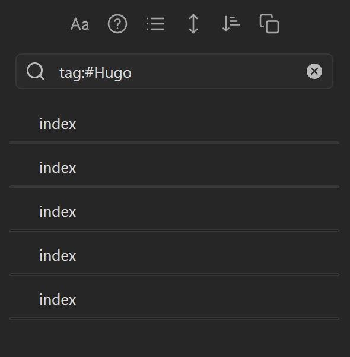
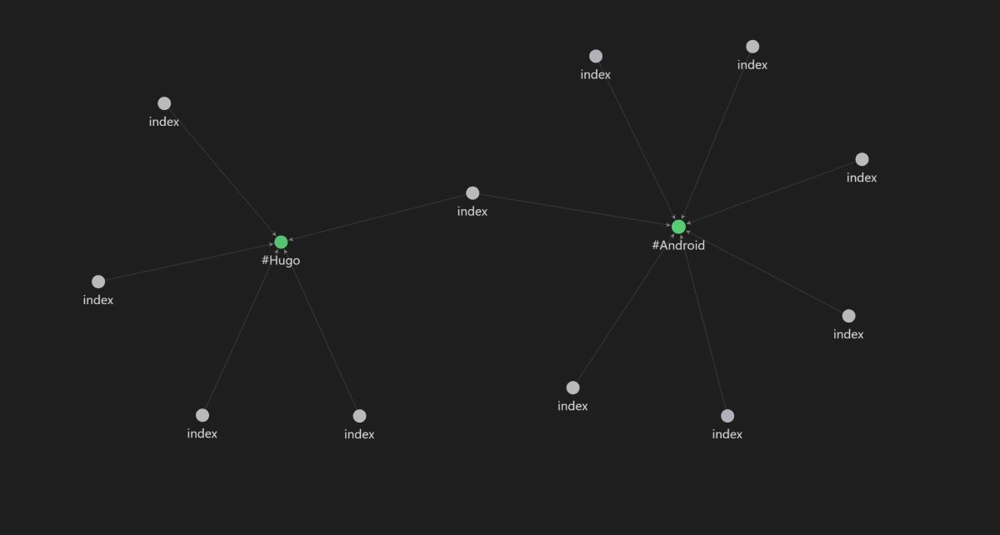
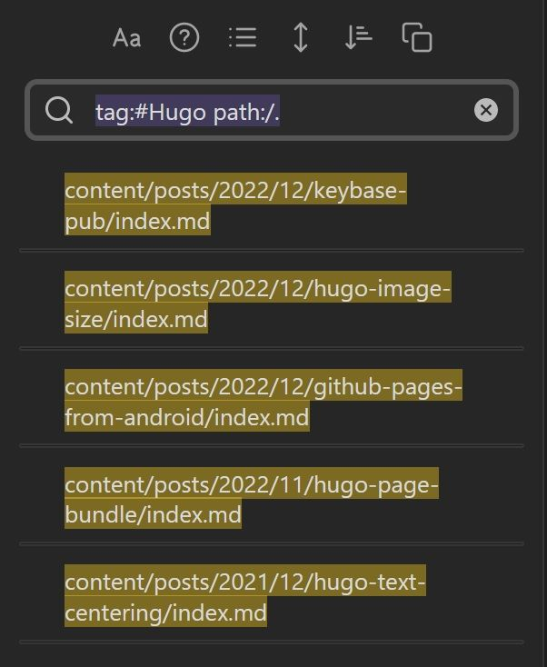

SE辞めた/Kotlin/Python/Hugo/Obsidian
好きなもの: OSS、個人サイト、クロスプラットフォーム
嫌いなもの: サブスク、いかがでしたかブログ、ビッグテックの囲い込み
生息地: mastodon

個人的にObsidianが熱いので記事の執筆もObsidianでやるか～と思ったのですが・・・主に検索面で問題が生じました
例えば記事に付けたタグで検索してみると、
な ん と い う こ と で し ょ う

全部indexです
HugoでPage Bundleに則った構成の場合、記事のファイル名はindex.mdで統一されるのでこの様になってしまいます

Obsidian特有のグラフ表示機能もこの有様で使い物になりません
検索時にパスを指定するとパスも表示されるようになります
tag:#Hugo path:/.

メリット: 一番シンプル
デメリット: ハイライトがうざい、検索時に毎回ひと手間増えてだるい、グラフは解決できない
(参考) https://forum.obsidian.md/t/show-path-when-searching/40303/4
グラフの表示の方に関しては調べても解決方法が無さそうだったので、Hugoの構成を見直す他ありません
ただ、Page Bundleに則った構成ではビルド時に不都合が生じてしまいます
content/posts/example/
├ index.md
├ content.jpg
└ thumbnail.jpg
上記のような構成でビルドすると、記事のURLは
example.com/posts/example/
となりますが、ここでindex.mdをtitle.mdに変えてビルドすると、記事のURLは
example.com/posts/example/title/
となってしまい、画像の参照が上手くいかなくなってしまいます
解決策を考えなければなりません
uglyurls: true
config.yml(又はtoml)でUgly URLsを有効にすると、記事は
example.com/posts/example/title.html
としてビルドされる為、フォルダ階層の深さが変わらなくなり画像の参照も正しくなります・・・
メリット: configに一行追加するだけ
デメリット: 記事のURL全部変わる、Ugly URLsがそもそも推奨されていない
デメリットがかなりデメリットなので却下しました（小泉構文）
想定としては、記事のファイル名は親フォルダーの名前と一緒にします
content/posts/example/
├ example.md
├ content.jpg
└ thumbnail.jpg
それぞれの記事のMarkdownファイルのFront Matterでビルド時のURLを指定します
url: /posts/example/
こうすることでビルド時のURLは
example.com/posts/example/
となるので、記事のファイル名がindex.mdの時と同じようにビルドされます
メリット: 記事のURLを変えずに済む
デメリット: 全記事に追記する必要があるのが少し面倒くさい、Front Matterの情報量が増える
現状実際にやるとしたらこちらかな（全記事に追記するのがだるいのでまだ保留中）
なんかいい方法無いかなぁー
SE辞めた/Kotlin/Python/Hugo/Obsidian
好きなもの: OSS、個人サイト、クロスプラットフォーム
嫌いなもの: サブスク、いかがでしたかブログ、ビッグテックの囲い込み
生息地: mastodon